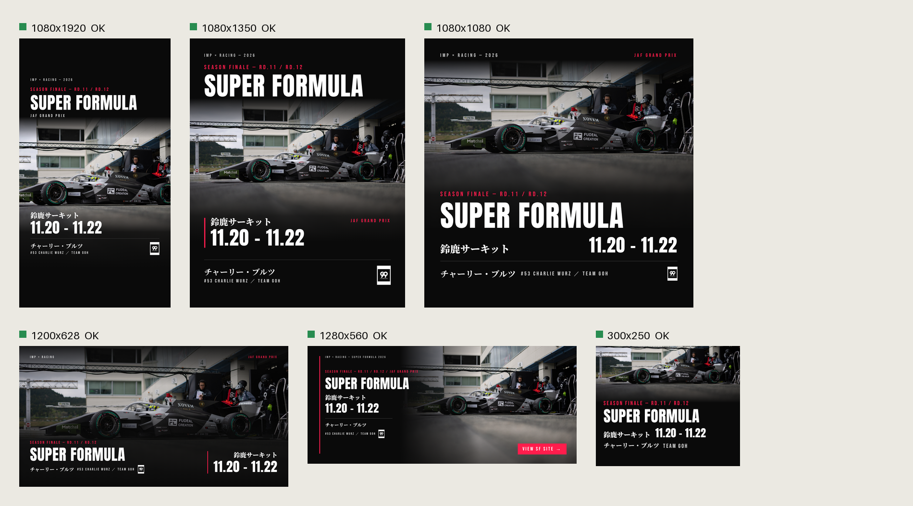

依頼を原稿（brief.md）にし、Claude がサイズごとに HTML で組む。
ブラウザで実測して PNG・PPTX に変換し、機械が事故を確かめる。
PPTX は Canva にドラッグして微調整できる。直しのうち次にも効くものは規範（banner.md）に戻す。
図1 全体ワークフロー。実線の箱は動いている工程、点線の箱は未着手。灰色のチップは人が手を動かす・決める工程。
参考構成にある Notion への書き戻し・Slack 投稿・差分の回収は、接続が決まってから足す。
Claude が組んだ HTML をブラウザ（Playwright の Chromium）で描き、座標・色・文字・改行を実測して、
出口に拠らない1つの形（layout.json）にする。出口ごとの変換と検査はそこから分ける。
図2 仕組みの中身。実線の出口（PPTX・PNG）は動いている。Figma と Path C は接続が決まってから。
SF 最終戦（鈴鹿・11.20–11.22）の告知を、6サイズで通したもの。検査は error 0 / warn 0。

| 場所 | 役割 | 状態 |
|---|---|---|
CLAUDE.md（リポジトリ直下） | 入口。バナーの依頼はスキルに従う | 動いている |
.claude/skills/banner-builder/ | 原稿 → 生成 → 検査 → 直し → 書き出しの手順 | 動いている |
brands/impress-racing/ | 正典から写したブランド（brand.md・banner.md・SOURCE.json・ロゴ） | 動いている |
prompts/ templates/ | 生成の指示（型は渡さない）・原稿のひな形 | 動いている |
tools/banner.py | init / generate / revise / export / status | 動いている |
tools/html2layout.mjs layout2pptx.py sheet.py | 実測・PPTX・シート | 動いている |
tools/check.py tests/check_selftest.py | 機械の検査と、わざと壊した入力での自己検査（16 ケース） | 動いている |
tools/sync_brand.py | 正典の変化をハッシュで見張る | 動いている |
| Notion・Slack・Figma・Canva 連携、差分の回収、無人実行の置き場所 | 参考構成の「＋」の部分 | 未着手 |